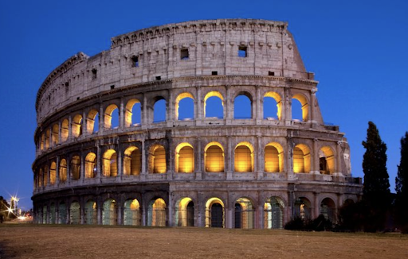
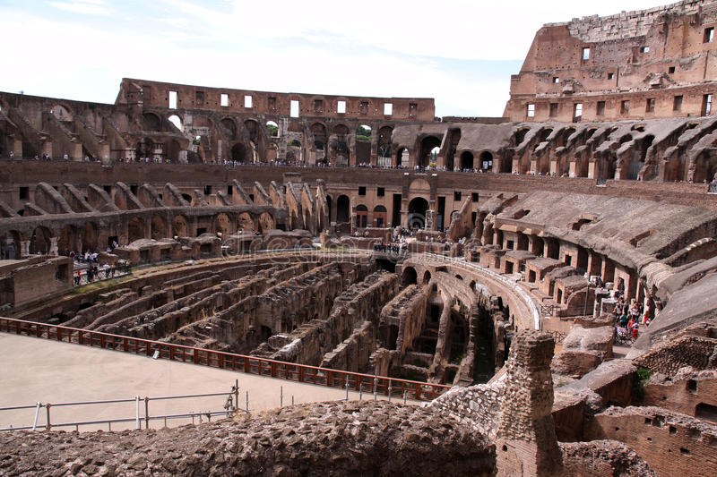
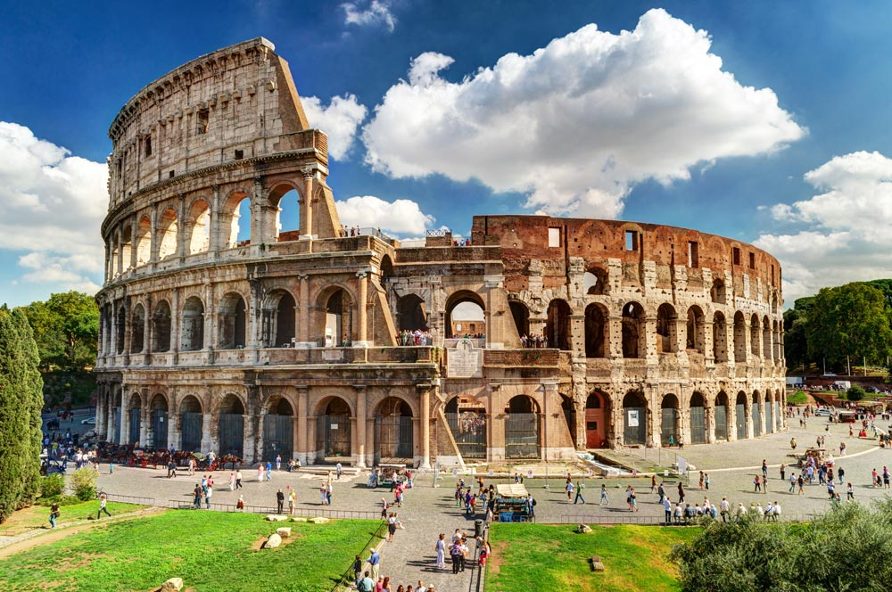

Skirtingai nuo graikų teatrų kurie būdavo statomi viena puse prišlieti prie kalvos, Koliziejus yra laisvai stovintis pastatas. Savo struktūra jis panašus į du priešpriešais stovinčius romėnų amfiteatrus. Šie būdavo pusrutulio formos, su scena vienoje pusėje ir žiūrovų vietomis kitoje. Scena elipsės pavidalo, 76×46 m. Statinio dydis siekia 185×156 m, išorinės sienos aukštis 48 m. Jis pastatytas iš didelių akmenų, sujungtų metaliniais sutvirtinimais. Viršuje būdavo ištempiamas žiūrovus nuo saulės ar lietaus dengiantis audeklas (velarium). Jis buvo sutvirtintas virvėmis, su didele skyle centre (nedengė scenos). Šį dangalą ištempdavo bei tvarkė Romos laivyno jūreivių komanda. Koliziejus pradėtas statyti 72 mūsų eros metais valdant imperatoriui Vespasianui – Flavijų dinastijos pradininkui, baigtas – 80 m., valdant imperatoriui Titui. Vien atidarymo iškilmėse nudobta apie 9,000 laukinių žvėrių.
Kol stovi Koliziejus, stovi Roma, sakydavo romėnai,- Jam sugriuvus, sugrius ir Roma, o su ja ir pasaulis [4]. Čia vyko masiški renginiai. Pavyzdžiui, 107 metais Trajanas, švesdamas pergales Dakijoje, surengė kautynių seriją dalyvaujant 11 000 gyvūnų ir 10 000 gladiatorių. Ji tesėsi 123 dienas. Pertraukose tarp kovų metu buvo vykdomi mirties nuosprendžiai: nuteistieji buvo siunčiami prieš žvėris neginkluoti. Renginių metu buvo naudojamos medžių, pastatų ir kitokios dekoracijos. Vyko teatro vaidinimai, kurių metu žūstančius veikėjus vaidinantys aktoriai (nuteistieji) iš tiesų būdavo nužudomi. 391 m vienuolis šv. Telemachas kovos metu išėjo į areną, protestuodamas prieš kautynes bei mėgindamas jas nutraukti. Pasipiktinę žiūrovai užmušė jį akmenimis [5]. Po to žmonių nuomonė ėmė keistis, vienuolio elgesys padarė įspūdį imperatoriui (Honorijui). Gladiatorių kovos paskutinį kartą minėtos 435 m. nors taip pat manoma jog paskutinė kova galėjo būti ir 404 m., kuomet jos buvo uždraustos. Gyvūnų medžioklės tesėsi dar mažiausiai iki 523 m. (tais metais Teodorikas Didysis kritikavo jų rengėjus už per didelį išlaidavimą).
Vėliau įvairios patalpos buvo naudojamos gyvenimui ir dirbtuvėms. 217 m. Koliziejus nukentėjo nuo gaisro: sudegė daug medinių konstrukcijų, taisymai tesėsi iki 320 m. Pagal Dio Cassius[6], gaisrą sukėlė žaibas. Apie 1200 m. Frangipani šeima naudojo pastatą kaip pilį. Didelę žalą padarė 1349 m. žemės drebėjimas, kurio metu griuvo ant mažiau stabilios žemės stovinti pusė. Dauguma nuvirtusių akmenų buvo panaudoti kitiems pastatams statyti ar remontuoti. XIV amžiuje į Koliziejų persikėlė religinė bendruomenė, kuri gyveno čia iki XIX amžiaus. [7] 1749 m. popiežius Benediktas XIV paskelbė Koliziejų šventa vieta, nes gladiatorių kovų laikais čia greičiausiai mirtim nubausta daug ankstyvųjų krikščionių (istorinių dokumentų apie tai nėra išlikę).[8] Vietoje, kur sėdedavo imperatorius, dabar stovi kryžius. 1820 m. popiežius Pijus VII įsakė atstatyti statinio išorinį žiedą laikančias konstrukcijas.
